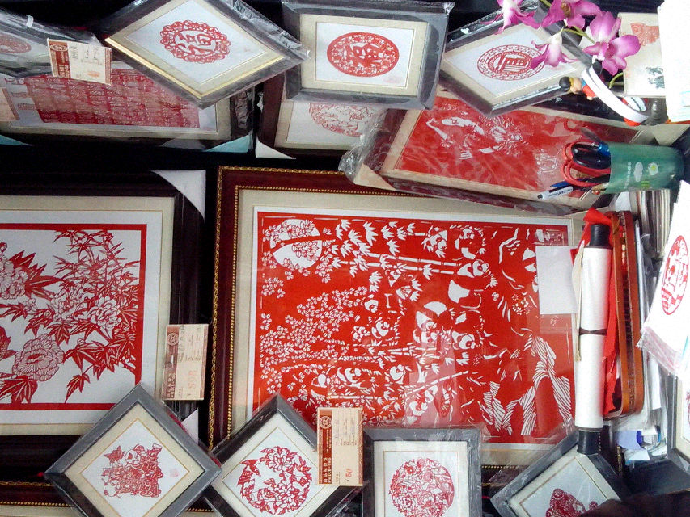

剪纸
2017 10-17
剪纸
中国剪纸是一种用剪刀或刻刀在纸上剪刻花纹，用于装点生活或配合其他民俗活动的民间艺术。在中国，剪纸具有广泛的群众基础，交融于各族人民的社会生活，是各种民俗活动的重要组成部分。


软陶人偶
软陶人偶，又称为软陶真人公仔、真人陶偶。在都市的流行潮流中，又一种时尚物品悄然出现了，这就是以真人为原型定做、烧制的陶偶，它们摆在案头上，能给生活带来情趣，传递情感，并使我们保持一颗童心。